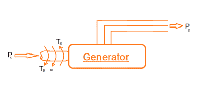
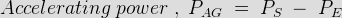
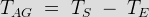
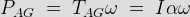
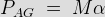
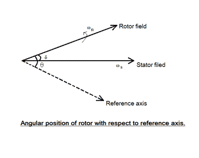

The ability of a synchronous power system to return to stable condition and maintain its synchronism following a relatively large disturbance arising from very general situations like switching ‘on’ and ‘off’ of circuit elements, or clearing of faults etc. is referred to as the transient stability in power system of the system. More often than not, the power generation systems are subjected to faults of this kind, and hence its extremely important for power engineers to be well-versed with the stability conditions of the system.
In general practice studies related to transient stability in power system are done over a very small period of time equal to the time required for one swing, which approximates to around 1 sec or even less. If the system is found to be stable during this first swing, its assumed that the disturbance will reduce in the subsequent swings, and the system will be stable thereafter as is generally the case. Now in order to mathematically determine whether a system is stable or not we need to derive the swing equation of power system.
Swing Equation for Determining Transient Stability

In order to determine the transient stability of a power system using swing equation, let us consider a synchronous generator supplied with input shaft power Ps producing mechanical torque equal to Ts as shown in the figure below.This makes the machine rotate at a speed of ω rad/sec and the output electromagnetic torque and power generated on the receiving end are expressed as Te and Pe respectively.
When the synchronous generator is fed with a supply from one end and a constant load is applied to the other, there is some relative angular displacement between the rotor axis and the stator magnetic field, known as the load angle δ which is directly proportional to the loading of the machine. The machine at this instance is considered to be running under stable condition.
Now if we suddenly add or remove load from the machine the rotor decelerates or accelerates accordingly with respect to the stator magnetic field. The operating condition of the machine now becomes unstable and the rotor is now said to be swinging w.r.t the stator field and the equation we so obtain giving the relative motion of the load angle δ w.r.t the stator magnetic field is known as the swing equation for transient stability of power system.
Here for the sake of understanding we consider the case where a synchronous generator is suddenly applied with an increased amount of electromagnetic load, which leads to instability by making PE less than PS as the rotor undergoes deceleration. Now the increased amount of the accelerating power required to bring the machine back to stable condition is given by,

Similarly, the accelerating torque is given by,

Now we know that

(since T = electric current X angular acceleration)
Furthermore, angular momentum, M = I ω

But since on loading the angular displacement θ varies continuously with time, as shown in the figure below, we can write.

θ = ωs + dδ/dt
Double differentiating w.r.t time, we get,
d2θ/dt2 = d2δ/dt2
where angular acciletation α = d2θ/dt2 = d2δ/dt2
Thus we can write,
PAG = M d2δ/dt2
Or M d2δ/dt2 = PS− PE
Now the electromagnetic power transmitted is given by,
PE = VG VM/ Xsin δ = Pmax sin δ
Since when δ = 0, maximum amplitude = VG VM/ X
Thus we can write,
M d2δ/dt
This is known as the swing equation for transient stability in power system.
 by
by